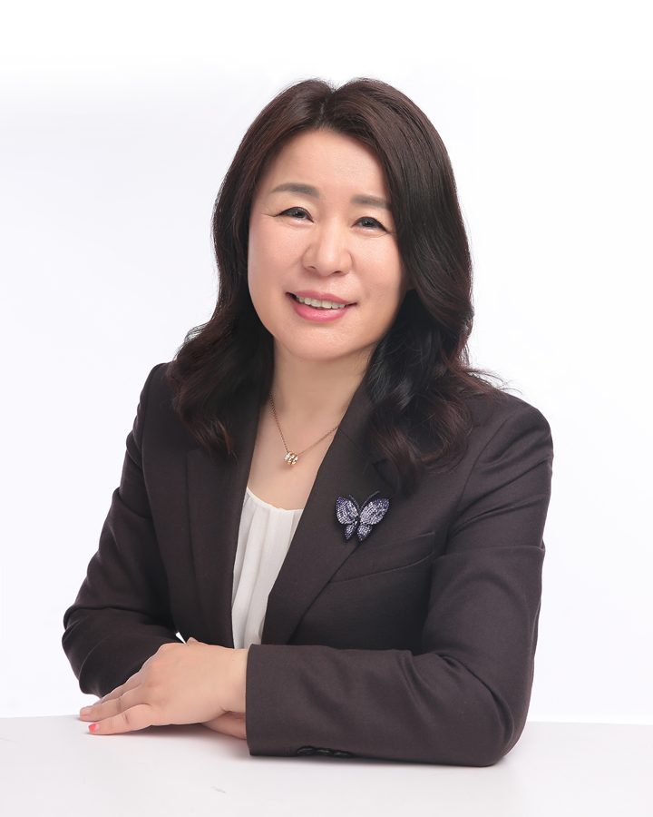

연구원 개요
중국증권행정연구원(CSAI)은 중국의 정책과 시장을 원문과 데이터로 읽어, 한국의 기업과 기관이 더 나은 결정을 내리도록 돕는 독립 거시경제 싱크탱크입니다. 연구·분석, 월간 「중국경제포커스」, 기업 자문, 교육, 국제협력을 한 흐름으로 운영합니다.
쌓인 기록으로 판단을 검증하고, 검증된 판단으로 한국 기업과 기관의 결정을 돕습니다.
연혁
- 2015.07주식회사 중국증권행정연구원 설립
- 2016.09연합뉴스, 안유화 박사를 ‘중국 금융 스페셜리스트’로 소개
- 2024.08전기신문 보도: 중국의 친환경 기술 선점과 한·중 협력
- 2025.04전기신문 보도: 미·중 패권 경쟁과 한국의 ‘삼중 트랙’ 대응
- 2025.06의정부시 인공지능 포럼 기조강연
- 2025.09아시아투데이 보도: AI·디지털자산과 한국 기업의 기회
- 2025.09한국일보 한국아카데미 14기 강의
- 2026.03매일경제와 「디지털자산·AI 융합 최고위과정」 공동 주관 (1·2기 운영, 3기 2027년 3월 개강)
- 2026.09뉴시스·매일경제 보도: “한국의 골든타임은 3~5년”
- 대외 표기
- CSAI
- 하는 일
- 중국 거시·정책·산업 연구, 콘텐츠 발행, 기업 자문, 교육, 국제협력
- 콘텐츠 채널
- 거시경제연구소 · 월간 「중국경제포커스」
- 언어
- 한국어 · 영어 · 중국어
- 슬로건
- Insight without Borders
우리가 서는 자리: 중국과 한국 사이의 경계선
1~2분기 먼저
검증할 가설 — 중국 정책은 중국 통계보다 1~2분기 먼저 한국 숫자에 나타난다. 이 가설을 매호 검증합니다. KOREA SENSOR →
CSAI는 중국 정책이 한국 기업의 손익이 되는 경계선에 섭니다. 한국어로, 기업의 의사결정을 위해, 판단을 공개 채점하고, 중국 학자의 기고가 실리는 중립 플랫폼을 지향합니다.
비전·미션
VISION 2036
중국의 정책을 한국의 결정으로 번역한다.
Translating China into Korean decisions · 중국과 세계를 잇는 아시아의 독립 거시경제 싱크탱크
미션
중국을 가장 깊이 읽는 거시경제 통찰로, 한국과 세계의 기업·기관이 더 나은 결정을 내리도록 돕는다.
Insight without Borders
국경을 넘어 통하는 통찰을 지향합니다.
핵심가치
통찰
중국 1차 자료를 원문으로 읽고, 한국 기관의 언어로 씁니다.
독립
구독과 자문이 핵심 수입입니다. 후원·성과보수·매매 추천은 없습니다.
정확
판단을 날짜와 함께 기록하고, 다음 호에 스스로 채점합니다.
실행
모든 글은 한국 시사점으로 끝나고, 자문은 결정 한 건 단위로 합니다.
차별화 자산: 판단 · 데이터 · 접근
정책 모니터링은 이제 AI가 대신합니다. 우리는 커버리지로 경쟁하지 않고, 판단·데이터·접근에서 복리로 쌓이는 자산을 만듭니다.
판단
정책 문서와 데이터를 근거로 판단을 내리고, 기준일과 근거를 남겨 나중에 검증합니다.
지금 하는 것
- 연구소장's Insight의 판단·한마디
- 심층보고 No.1 (반도체·DRAM 공급망)
준비하는 것
- 공개 성적표 페이지
- 시나리오별 확률 표기
데이터
공식 통계와 공개 자료를 원자료 기준으로 쌓아, 시계열로 봅니다.
지금 하는 것
- 「연구실 데이터」 코너 — 예: 반도체 수입 증가의 88%는 가격 효과
- 「한국 기업 중국 체감지수」 설문 시작
준비하는 것
- 체감지수: 매월 · 5문항 · 업종별 · 결정 단위(가격·투자·고용)
- 지방정부 부채(LGFV) 성별 스트레스 지수
- 「열흘 노트」 매월 1일·11일·21일 1쪽 (한국 수출로 읽는 중국)
접근
중국 원문 자료와 현지 전문가 교류로 정책의 맥락을 읽습니다. 공개 자료와 적법한 조사 범위 안에서 일합니다.
지금 하는 것
- 원장의 중국 학계·금융계 네트워크
- 연합인포맥스 「안유화 쇼」 · 유튜브 독자층
준비하는 것
- 중국 학자 특별기고 분기 1편 (공개 분석만)
- CEO China Roundtable(분기, 초청형) · 연례 중국 전망 포럼
운영 원칙
하는 일
- 거시경제·산업·정책·공급망 분석과 기업의 전략적 의사결정 지원
- 공개 자료와 적법한 조사 범위 안에서의 연구
- 숫자는 출처와 함께, 추정은 추정이라고 밝히기
- 구독과 자문을 핵심 수입으로 하는 독립 운영
하지 않는 일
- 유료 종목 추천, 목표가, 매매 전략 제시
- 고객 자산 운용, 투자일임, 투자중개·주선
- 비공개 정보 접근을 내세운 홍보
- 실사·전문가 네트워크형 조사, 비공개 데이터 수집
- 정책 모니터링만 하는 상품 — 판단·데이터·접근이 없는 상품은 내지 않습니다
- 단독 후원이나 정부 과제에만 기대는 운영
4대 전략 방향
네 방향을 동시에가 아니라 단계로 갑니다: 리서치 → 자문 → 교육 → 미래 금융 연구.
리더십

안유화 교수
중국증권행정연구원(CSAI) 원장 · 중국 경제·금융 전문가 · 경영학 박사
중국을 묻는 것은 결국 한국을 묻는 일입니다
“중국은 어떻게 됩니까?”라는 질문 뒤에는 늘 “그러면 우리는 어떻게 해야 합니까?”가 있습니다. 저희 연구는 그 두 번째 질문에 답하려고 있습니다.
중국을 정확히 읽는 것이 세계 경제를 읽는 일이고, 그 끝은 언제나 한국의 결정이어야 합니다.
중국증권행정연구원 원장 안유화
안유화 교수는 중국 금융·자본시장을 연구하는 경제학자입니다. 중국 지린성 옌지에서 태어나 중국화공대학교에서 화학공정을 전공했고, 연변대학교에서 법학 석사, 고려대학교에서 경영학 박사 학위를 받았습니다. 연변대학교에서 10년간 학생을 가르쳤습니다.
2008년부터 2015년까지 자본시장연구원 국제금융실에서 중국 담당 연구위원으로 일하며 「중국금융시장포커스」를 창간해 이끌었습니다. 이후 한국예탁결제원 객원연구원, 성균관대학교 중국대학원 금융학과 교수(2016~2023)를 지냈고, 외교부 정책자문위원(2015~2025)과 국가지식재산위원회 전문위원으로 정책 자문을, 법무법인 율촌 중국팀 비상임고문으로 법률·투자 자문을 맡았습니다.
현재 중국증권행정연구원 원장으로 한국 기업의 중국 투자 및 중국 기업의 한국과 미국투자 등 자문을 하고 있으며, 2024년부터 중국 하남성과학기술대학교 핀테크학과 석좌교수(学科带头人)로 재직 중입니다. 연세대학교 디지털금융·가상자산 최고위과정 교육원장(~2024)과 삼성글로벌경영포럼 리서치 전문위원(~2025)을 지냈습니다. 유튜브 「안유화경제투자론」과 연합인포맥스 「안유화 쇼」로 중국과 한국, 미국 및 세계 경제를 대중에게 알기 쉽게 설명하는 것으로 가장 큰 인기를 얻고 있습니다.
약력
- 중국증권행정연구원 원장
- 중국 하남성과학기술대학교 핀테크학과 석좌교수(学科带头人)
- 연세대 디지털금융·가상자산 최고위과정 교육원장
- 삼성글로벌경영포럼 리서치 전문위원
- 월간 「중국경제포커스」 창간 · 편집장
- 성균관대학교 중국대학원 금융학과 교수
- 법무법인 율촌 중국팀 비상임고문
- 국가지식재산위원회 전문위원
- 외교부 정책자문위원 (경제·재외동포 분과)
- 한국예탁결제원 객원연구원
- 자본시장연구원 연구위원 · 「중국금융시장포커스」 책임편집
- 고려대학교 경영학 박사
- 연변대학교 경제학과 법학 석사
- 연변대학교 교수
- 중국화공대학교 화학공정 공학사
조직
외부 전문가 자문위원회
교육본부
강좌·독서모임
중국 탐방
산업전략본부
유튜브 영상 제작
방송·인터뷰
리서치&컨설팅본부
기업 회원·컨설팅
국제협력, 외부 강연
기획·운영관리
홈페이지·홍보
세무&재무본부
비용 처리와 증빙
투자 집행 예산
거시경제연구소
열흘 노트·심층보고
영상 해설·뉴스레터
판단 기록 관리